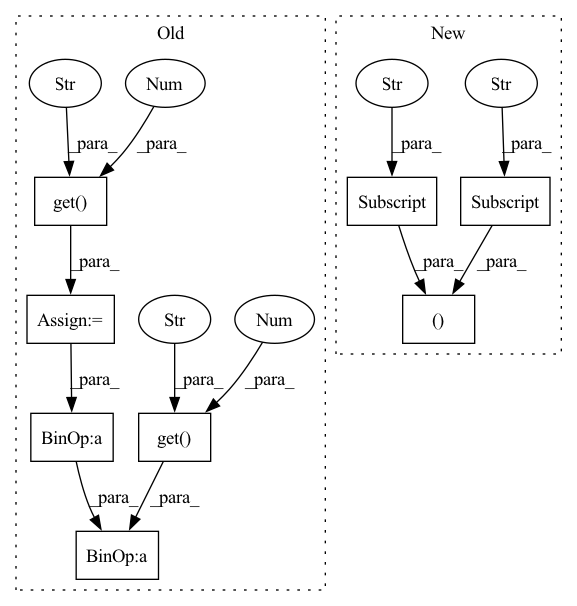

Pattern ID :3659
Before Change
if self.training:
// get the mean/std of each local path
time_gap_mean = self.data_feature.get("time_gap_mean" , 43.8756927994 )
time_gap_std = self.data_feature.get("time_gap_std" , 51.4811932987 )
mean, std = (self.kernel_size - 1) * time_gap_mean, (self.kernel_size - 1) * time_gap_std
current_tim = (batch["current_tim"] - time_gap_mean) / time_gap_std
// get ground truth of each local path
local_label = get_local_seq(current_tim, self.kernel_size, mean, std, self.device)After Change
else:
entire_out = self.predict(batch)
time_mean, time_std = self.data_feature["time_mean"] , self.data_feature["time_std"]
entire_out = normalize(entire_out, time_mean, time_std)
time = normalize(batch["time"], time_mean, time_std)
entire_loss = self.entire_estimate.eval_on_batch(entire_out, time, time_mean, time_std)
In pattern: SUPERPATTERN
Frequency: 3
Non-data size: 8
Instances Fragment ID: 13803218
Project Name: libcity/bigscity-libcity
Commit Name: cab95b3cb593a94b61a1b781d97ef62ca1afc41e
Time: 2021-12-26
Author: 1152090685@qq.com
File Name: libcity/model/eta/DeepTTE.py
M Class Name: DeepTTE
N Class Name: DeepTTE
M Method Name: calculate_loss(2)
N Method Name: calculate_loss(2)
M Parent Class: AbstractTrafficStateModel
N Parent Class: AbstractTrafficStateModel
M File Name: libcity/model/eta/DeepTTE.py
N File Name: libcity/model/eta/DeepTTE.py
M Start Line: 365
M End Line: 376
N Start Line: 369
N End Line: 378
Before Change
return entire_loss
def predict(self, batch):
time_mean = self.data_feature.get("time_mean" , 1555.75269436 )
time_std = self.data_feature.get("time_std" , 646.373021152 )
if self.training:
entire_out, (local_out, local_length) = self.forward(batch)
entire_out = entire_out * time_std + time_mean
return entire_out, (local_out, local_length)
else:
entire_out = self.forward(batch)After Change
return entire_loss
def predict(self, batch):
time_mean, time_std = self.data_feature["time_mean"] , self.data_feature["time_std"]
if self.training:
entire_out, (local_out, local_length) = self.forward(batch)
entire_out = unnormalize(entire_out, time_mean, time_std)
return entire_out, (local_out, local_length) Fragment ID: 13803222
Project Name: libcity/bigscity-libcity
Commit Name: cab95b3cb593a94b61a1b781d97ef62ca1afc41e
Time: 2021-12-26
Author: 1152090685@qq.com
File Name: libcity/model/eta/DeepTTE.py
M Class Name: DeepTTE
N Class Name: DeepTTE
M Method Name: predict(2)
N Method Name: predict(2)
M Parent Class: AbstractTrafficStateModel
N Parent Class: AbstractTrafficStateModel
M File Name: libcity/model/eta/DeepTTE.py
N File Name: libcity/model/eta/DeepTTE.py
M Start Line: 387
M End Line: 395
N Start Line: 389
N End Line: 396
Before Change
longi_std = self.data_feature.get("longi_std", 0.04988770679679998)
current_longi = (batch["current_longi"] - longi_mean) / longi_std
lngs = torch.unsqueeze(current_longi, dim=2)
lati_mean = self.data_feature.get("lati_mean" , 30.652312982784895 )
lati_std = self.data_feature.get("lati_std" , 0.04988770679679998 )
current_lati = (batch["current_lati"] - lati_mean) / lati_std
lats = torch.unsqueeze(current_lati, dim=2)
states = self.state_em(batch["current_state"].long())After Change
longi_mean, longi_std = self.data_feature["longi_mean"], self.data_feature["longi_std"]
current_longi = normalize(batch["current_longi"], longi_mean, longi_std)
lngs = torch.unsqueeze(current_longi, dim=2)
lati_mean, lati_std = self.data_feature["lati_mean"] , self.data_feature["lati_std"]
current_lati = normalize(batch["current_lati"], lati_mean, lati_std)
lats = torch.unsqueeze(current_lati, dim=2)
states = self.state_em(batch["current_state"].long()) Fragment ID: 13803220
Project Name: libcity/bigscity-libcity
Commit Name: cab95b3cb593a94b61a1b781d97ef62ca1afc41e
Time: 2021-12-26
Author: 1152090685@qq.com
File Name: libcity/model/eta/DeepTTE.py
M Class Name: GeoConv
N Class Name: GeoConv
M Method Name: forward(2)
N Method Name: forward(2)
M Parent Class: nn.Module
N Parent Class: nn.Module
M File Name: libcity/model/eta/DeepTTE.py
N File Name: libcity/model/eta/DeepTTE.py
M Start Line: 79
M End Line: 100
N Start Line: 86
N End Line: 104